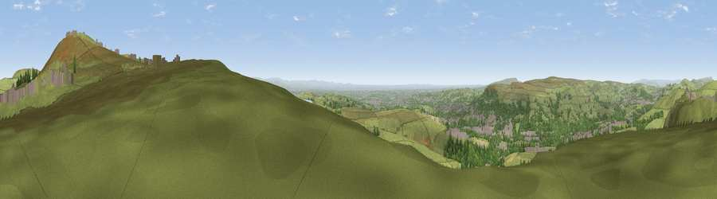

Viewpoint near Shuttleworth
#5821 in England · top 5% of its area beats it · near Shuttleworth · open accessWhere it is
The exact computed spot (SD 81625 18075). Click the marker for map links.
Public access: this spot lies on mapped open-access land (CRoW Act 2000) — you may roam here on foot. Computed from Natural England's CRoW access layer and OpenStreetMap rights of way — not the legal definitive map. Always verify locally.
The view, rendered

A 360° render of this exact spot computed from the terrain model, tree cover and land cover — summer colours, afternoon light, calibrated against photographs of famous viewpoints. Real trees, hedges and buildings will differ in detail.
The panorama
Grey silhouette: terrain skyline in each direction (720 bearings, Earth curvature and refraction included). Dashed green: skyline with trees (+15 m) and buildings (+8 m) as obstacles. Blue strip: how far the ground is visible on each bearing.
Where the view opens
Wedge length = distance to the farthest visible ground on that bearing (vegetation-aware). Rings at 10, 25 and 50 km.
What fills the view
72% grassland · 20% woodland · 7% built-up ·
Angular shares of the visible panorama (visual magnitude), not map area. Landscape diversity 0.36 (0–1 Shannon).
Key numbers
More beautiful places nearby
The staircase of upgrades: each row has a higher view potential than everything closer. Driving times are estimates from straight-line distance, calibrated against real road routing — check an actual route before setting out.
| Place | Direction | Drive | Score |
|---|---|---|---|
| Viewpoint near Edenfield | NE · 1 km | ~3 min | 77.5 |
| Darwen Hill | WNW · 14 km | ~26 min | 80.7 |
| White Brow | WSW · 17 km | ~29 min | 82.9 |
| Warton Crag | NNW · 64 km | ~86 min | 83.2 |
| Viewpoint near Grange-over-Sands | NW · 73 km | ~97 min | 83.4 |
| Viewpoint near Cartmel | NW · 76 km | ~100 min | 87.0 |
| Viewpoint near Cartmel | NW · 77 km | ~101 min | 87.2 |
| Viewpoint near Finsthwaite | NNW · 82 km | ~106 min | 90.3 |
53.65884, -2.27952 · source: screening · position refined by local search. Computed location — check access rights before visiting.